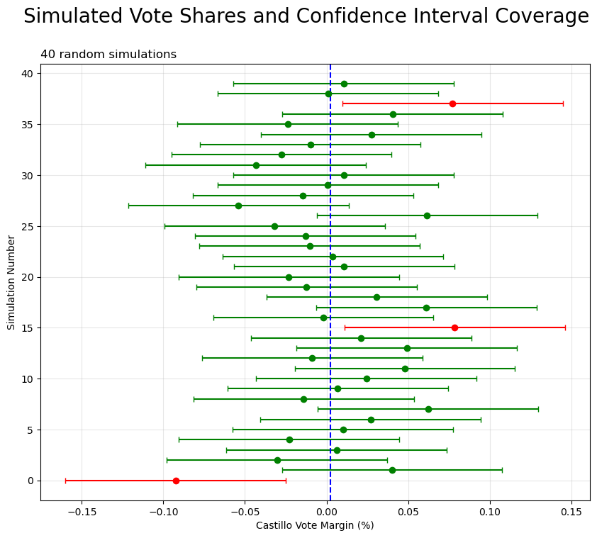
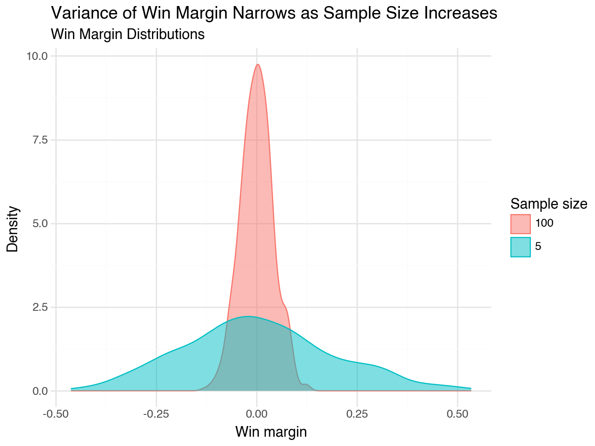
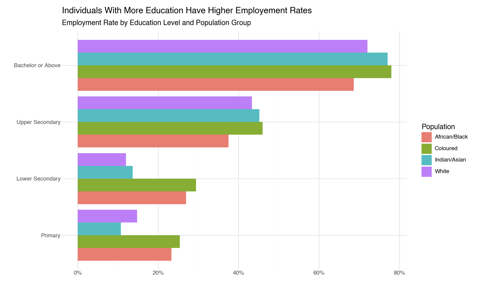

Welcome to my portfolio! Here are some of my favorite visualizations from PP422.
Connect with me on LinkedIn
[Brief description of what this visualization shows]
[Brief description of what this visualization shows]
[Brief description of what this visualization shows]
